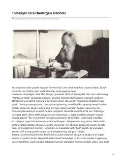

TTLev Tolstoyning dunyoqarashini shakllantirgan va unga taʼsir qilgan kitoblar roʻyxati.
Ushbu asar buyuk yozuvchi Lev Tolstoyning dunyoqarashiga va ijodiga kuchli taʼsir koʻrsatgan kitoblar roʻyxatini oʻz ichiga oladi. Muallif adibning hayot bosqichlariga koʻra saralangan ushbu adabiyotlarni sharhlar va qisqacha maʼlumotlar bilan taqdim etadi.